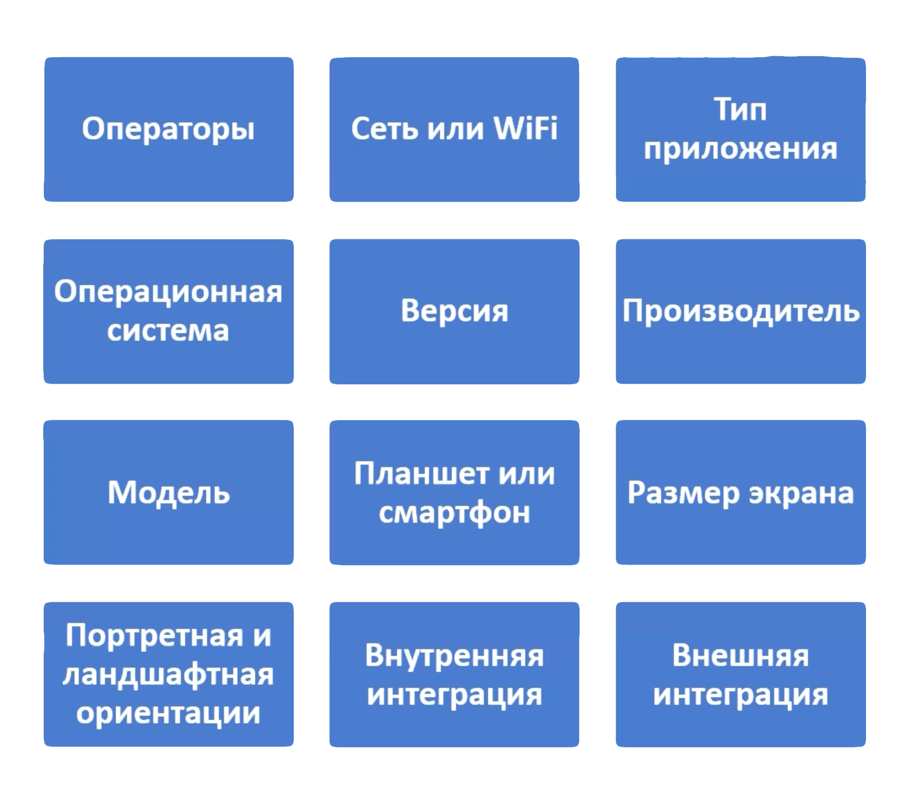
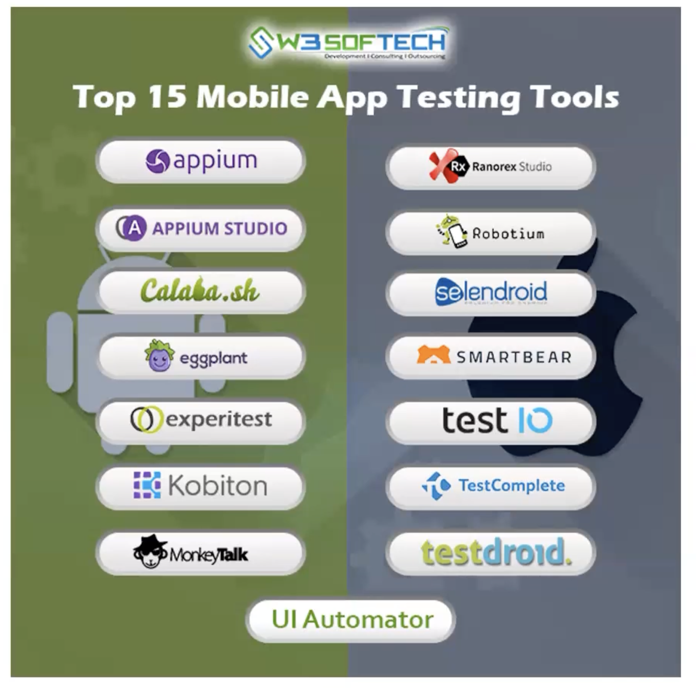

Mobile
Mobile-устройства
- Смартфоны
- Планшеты (Tablet), также относятся к мобильному тестированию
- Smart-часы
- Навигаторы/авто-панели
- VR-очки / Очки дополненной реальности

Спе�цифика мобильных приложений
- Версии мобильных ОС обновляются чаще чем десктопные
- Производительность мобильных устройств ниже, чем десктопных
- Ограниченная площадь экрана, разные размеры экрана, разрешение, плотность
- Разные режимы отображения (Portrait and Landscape)
- Производительность может зависит от оператора (скорость сети 3G, 4G) или от Wifi, поэтому нужно тестировать как на WiFi, так и на мобильном интернете
- Парк устройств Android очень широк, что усложняет тестирование
- Могут влиять фоновые процессы - Прерывания (Звонок, SMS, Будильник и т.д.)
- Чтобы приложение можно было загрузить в Google Play или AppStore, то при разработке нужно соблюдать так называемые гайдлайны разработки, иначе приложение не будет обдобрено для загрузки
- Можно тестировать на эмуляторе (Android открытый код)/симмуляторе (iOS зак�рытый код) (виртуальное устройство, реализованное через ПО), но лучше всего проверять на реальном физ. устройстве
Симмуляция - создание видимости работы программы (более ВУ).
Эмуляция" - точное воспроизведение работы программы или системы в определенной среде (более НУ).
Виды мобильных приложений
- Веб-приложение - адаптивное приложение доступное через браузер, которым можно пользоваться на любых устройствах
- Зависимы от подключения к сети
- Уязвимость выше чем у нативных
- Простота тестирования, кроссплатформенность и кроссбраузерность
- Разработка и поддержка дешевле, чем у нативных
- Нативные - специально написанные для платформы (Android - Java/Kotlin, iOS - Swift/Objective-C)
- Более оптимизированные под платформу (плавность. юзабилити и т.д.)
- Могут быть независимыми от �подключения к сети
- Разработка и поддержка дорого стоят
- Тестирование более сложно, так как нужно проверять на многих устройствах
- Нужно соблюдать гайды AppStore и Google Play, чтобы приложение могли там разместить
- Гибридные - гибрид нативного и веб-приложения. Для тех. реализации используется технология WebView (по сути будет открываться веб-страница или веб-приложение внутри нативного контейнера). Функционал таких приложений может быть как полностью реализованным с помощью WebView (голый нативный контейнер + вся логика на WebView), либо частично (есть часть нативного функционала, есть часть WebView), то есть реализованно на WebView может быть не всё приложение, а лишь отдельные его модули.
Как можно тестировать
- Реальное устройство
- Эмулятор
- Интернет-сервисы
Категории тестирования
I. Жизненный цикл приложения
- Установка/обновение/удаление (Google Play, App Store)
- Запуск
- Работа в фоне
- Кэш (хранение, очистка)
- Системные прерывания (на фоновые процессы)
II. Сеть
- Прерывание сети/Без сети
- Медленная сеть
- Без сети/Режим полета
- Через Wifi
- Геолокация
III. Безопасность
- Пароли
- Связь с сервером
- Проверка на утечку данных
IV. Ресурсы устройства
- Недостаточнор свободного места
- Неподдерживаемые функции
V. Контент
- платтный
- общедоступный
- конфиденциальный
VI. Юзабилити
- Разные ширины экранов
- Размер элементов удобен для нажатия
- Спиннеры и лоадеры
- Поддержка нативных жестов
Прерывания
Фоновые процессы мобильных устройств.
-
Системные (Сторонние push-уведомления, обновления, оповещения и т.д.)
-
Сетевые (Сеть, Wifi, SMS и т.д.)
-
Аппаратные (Звонки, аккумулятор, bluetouth, громкость, блокировка и т.д.)
Статистика Mobile (РФ 2022 - statcounter)
Mobile OS
Перед тестированием нужно узнать ЦА пользователей, чтобы понять на каких устройствах нужно будет тестировать.
- Android - 69%
- iOS - 30%
- Остальные - 1%
Инструменты

-
Browserstack, Saucelabs, LambdaTest, Saucelabs, AWS Device Farm, Applause, Selenium - Онлайн тестовые фермы
-
Charles - Прокси-сервер